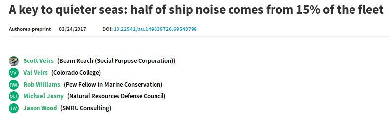
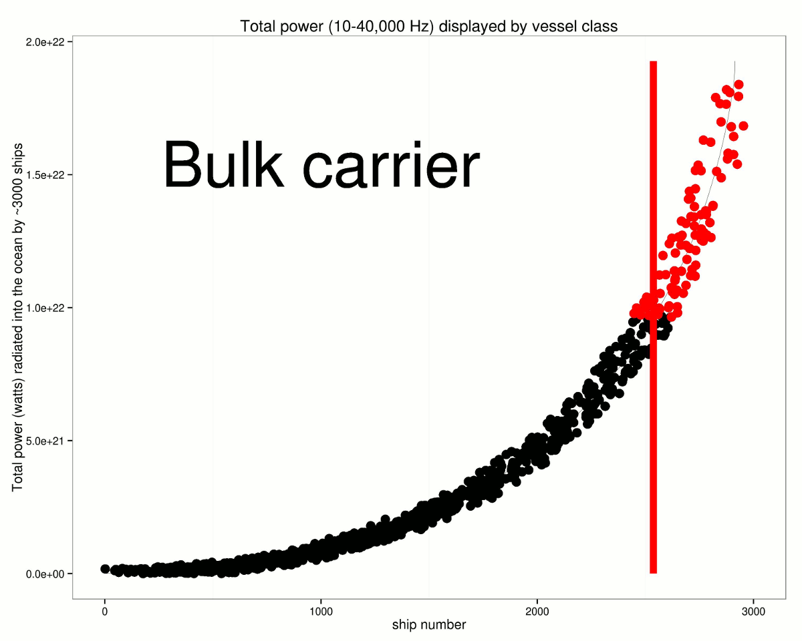

We have learned the following:
There are many ways to reduce the noise emanating from individual ships
Slow vessels down Quiet the noisiest vessels Reroute vessels
11.8 kt speed limit should yield half the sound energy
 
Previous Slide
Next Slide